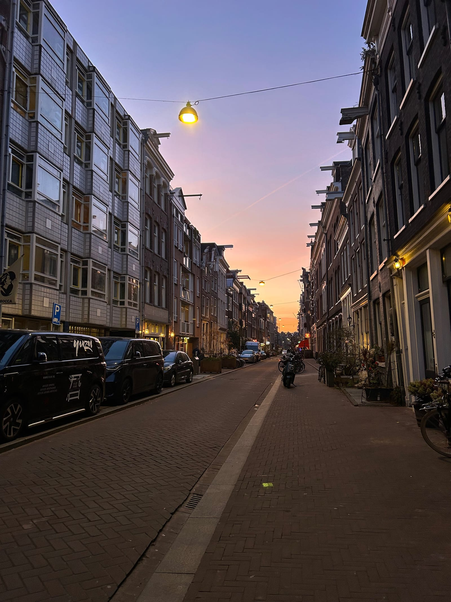
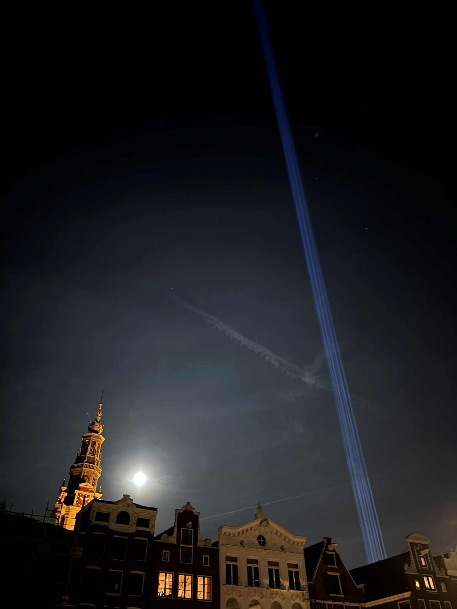
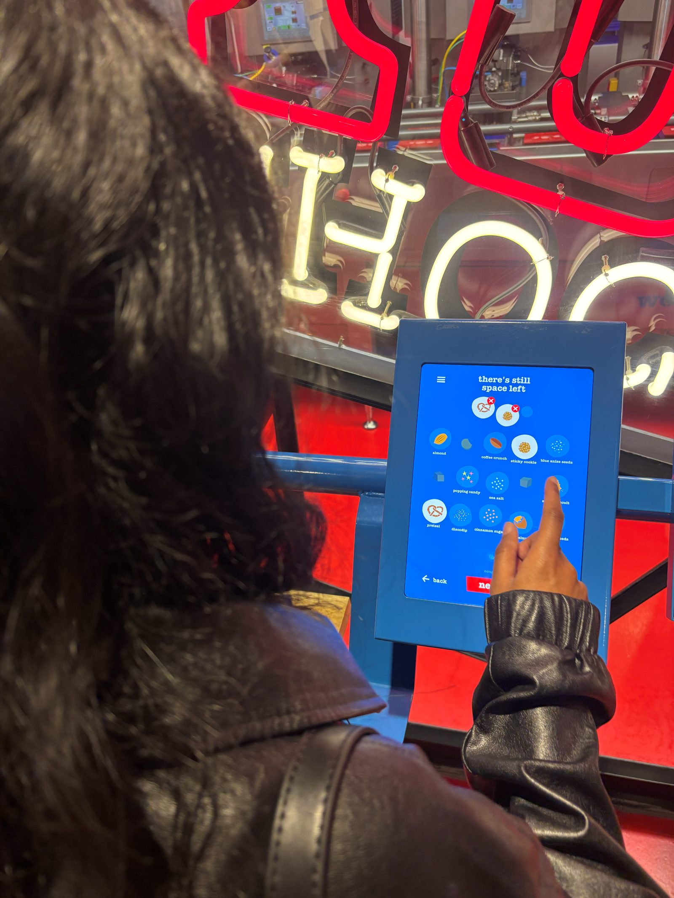
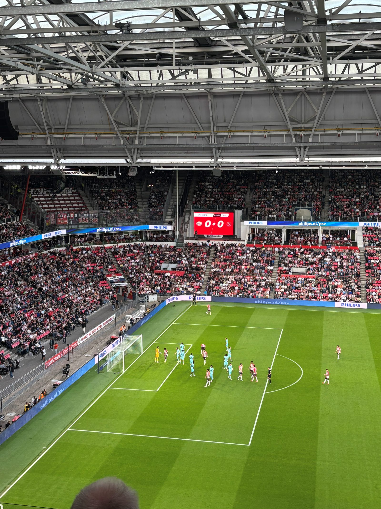
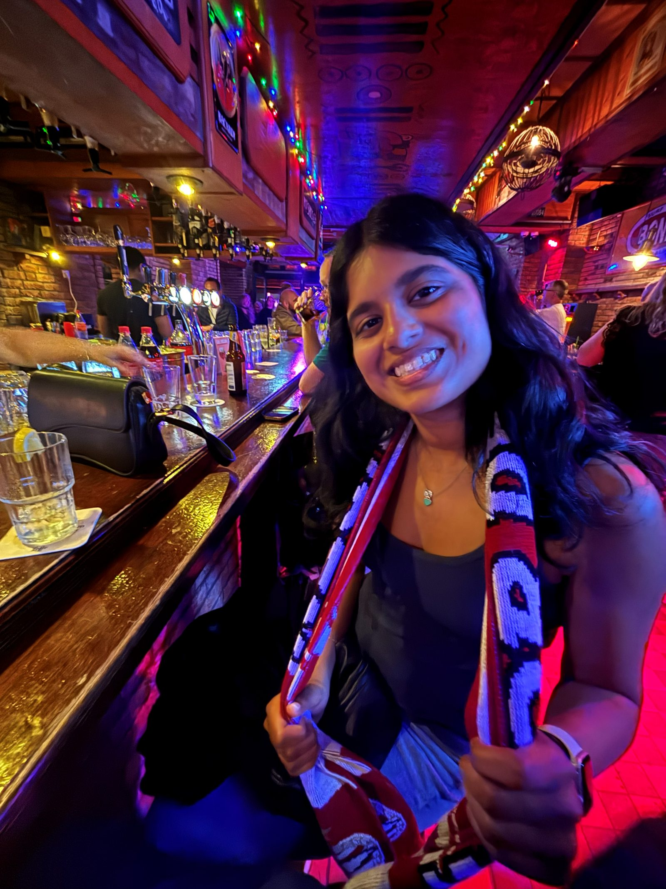
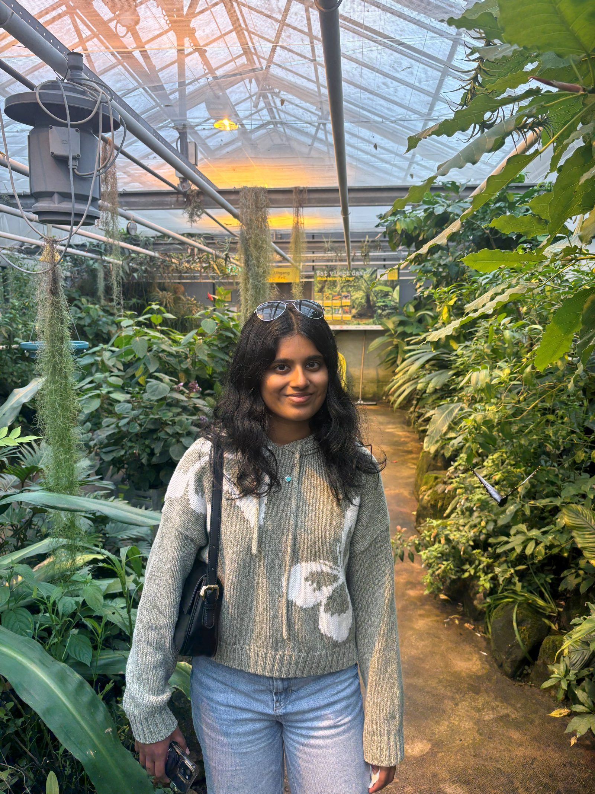

NETHERLANDS
Friday (Amsterdam)
- Woke up at 3:45 for the 6:05 flight to Amsterdam
- Took off early and landed an hour later
- Got on the bus around 7:45 to Keukenhof
- Tons of flowers, much bigger than anticipated but no flower fields
-
1 / 4
- Tons of flowers, much bigger than anticipated but no flower fields
- Took the bus back to Amsterdam RAI and then the metro towards the hostel to drop off our bags at like noon
- At brunch at Eggs Benaddicted
- Lots of Americans by us
- Went to Tony's but the line was too long so we just did the Amsterdam Tulip Museum
- Got souvenirs and met with our tour group
- Great tour, he was very entertaining and had such a perfect American accent we thought he was American until he fully introduced himself and said he was dutch
- Their English is good in the Netherlands but usually at least there's an accent
-
1 / 3
- Great tour, he was very entertaining and had such a perfect American accent we thought he was American until he fully introduced himself and said he was dutch
- Their English is good in the Netherlands but usually at least there's an accent
- Walked to the Heineken Experience
- Exceeded our expectations, very futuristic and interesting
- They had an F1 simulator but it was shut down once we got there
-
1 / 2
- Exceeded our expectations, very futuristic and interesting
- They had an F1 simulator but it was shut down once we got there
- Checked in to the hostel
- They gave us a free drink with like no alcohol
- Went to Bar Jones
- Felt underdressed because there was a work event there but it was cheap

- Felt underdressed because there was a work event there but it was cheap
- Walked around Red Light District

- Went home and slept
Saturday (Amsterdam-Eindhoven)
- Got woken up by the others being loud in our room at like 7:45
- Grabbed pastries down the street at like 9:45 and walked to Tony's
- No line this time so we made our chocolates

- No line this time so we made our chocolates
- Took the tram to Albert Cuypstraat for the market and got...
- Elote
- Fresh juice
- Fresh stroopwaffel
- Korean fried chicken bao bun
- Bitterballen
- Went shopping on their shopping street for a bit more than an hour
- Grabbed our bags and went to pick up our chocolates
- Got on the train to Utrecht and transferred to the train towards Eindhoven
- Got in to Eindhoven Centraal and checked into the Airbnb
- Marieke was an amazing host, very sweet person
- We got Chidóz, basically Chipotle, for dinner and walked around the city for a bit
- Headed to Philips Stadion for PSV vs Almere City at 8:00
- Great match, 5-0 plus Malik Tillman scored
- They played the Max Verstappen song for him (duh duh duh duh, Malik Tillman)

- Great match, 5-0 plus Malik Tillman scored
- They played the Max Verstappen song for him (duh duh duh duh, Malik Tillman)
- Went out to NAME?!? for drinks after
- Longest street of nightlife in Europe

- Longest street of nightlife in Europe
- Walked home and slept a bit after 1:00
Sunday (Utrecht)
- Got up at 9:00, showered, packed, and went to the station to go to Utrecht
- Got Wok! Asian Street Food for lunch
- Really good food and portions
- Walked to the Utrecht Dom
- Didn't go up the tower but pretty cool and big for a place that small
-
1 / 2
- Didn't go up the tower but pretty cool and big for a place that small
- Walked around town for a bit and got juices for a snack
- Took a tram to the botanical gardens by the University
- Nice area, but smaller than it seems

- Nice area, but smaller than it seems
- Took a bus back to the city and walked around and relaxed some more
- Went to the mall for a little before taking a train to the airport
- Landed in Berlin at 10:30, went home, showered, and slept